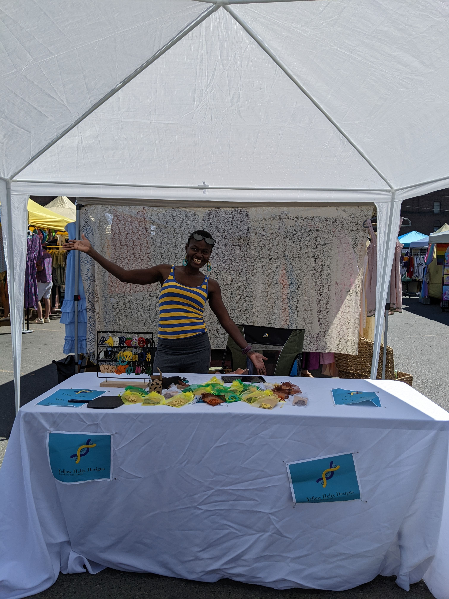

My reflection of 2023 is clouded with a less than ideal Q4 but I’ll do my best to give it a fair trial. Its that time of the year so as tradition detects I’ll join the rest of humanity to look back and plan forward. With a slightly different format this time, lets dive in:
Highlights ¶

- PR-ed on the 50K and 50 miler.
- Finally got around to swim.
- Launched my first online course, ontrack to launch my second one.
- Made memories with my family, twice.
- Read 28 books, the goal was 30 but this is the most I’ve read in one year 🎊.
- Ran over 3000 miles.
Lowlights ¶
In Progress ¶
- Building community in Seattle.
- More writing projects. I’m considering moving this blog to a Substack newsletter, Subscribe if you want to stay in the loop.
- Career things.
- Balance.
While the first half of 2023 was about ticking all the boxes, the second half was more experimental. I didn’t feel as productive in H2 but I learnt a lot more. As box ticker, living in the grey zone is way out of my comfort zone and that came with many lessons. Here are the ones that stand out.
- Comma, that’s okay.
Ever since I heard this from Alex Hormozi, I haven’t looked back. Its a very powerful suffix to reconcile opposing views. For instance; ‘I’m not into [blank] that you really like, , that’s okay. Its an acknowledgement of diversity without being confrontational. Highly recommend you try it too.
- There is no such thing as half-pregnant.
Pregnancy is a weird analogy but I think it drives the point home. Its one of those things you can’t really half-ass, or try out for the vibes. Its a commitment to responsibility for 9 months and beyond. A lot of things worth doing require unwithering commitment, commit wisely.
- This is the youngest you’ll ever be.
Morbid but true. I was reminded of this from reading Die with Zero and life hasn’t been the same. Whether or not we like it our health decays every day. Each passing day is an opportunity to curate experiences and make memories before its too late. Let that guide the choices you make.
- People are complex, relationships take time, trust is the real currency.
This is a note to self because as an introvert I need to be reminded of this more often than not.
- Its always a good idea to go for a walk.
Walking has got to be the most underrated gear in our toolkit. If I had a dime for every issue I’ve walked through, I’d be have a lot more money. When in doubt, just go for a walk.
- Breakthroughs happen in the muck.
Muscles have to breakdown to grow. Diamond are made under pressure. Embrace the suck because that’s where growth happens.
That said, I’m ready for the blank slate that is 2024. A chance to double down on in-progress items, pick-up new ones and let go of others. There is no telling whether this will be your year but I hope at least you learn from it. Happy New Year!